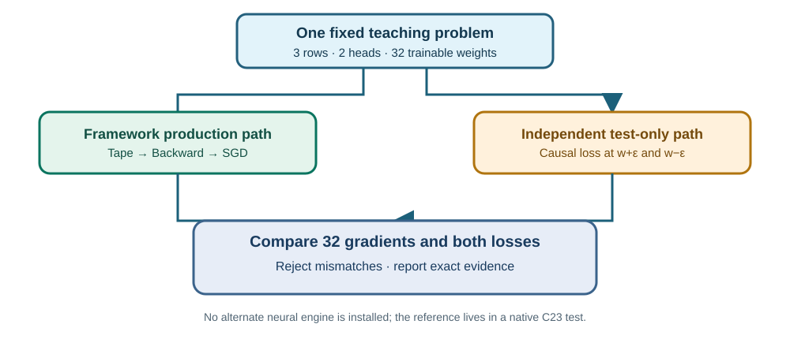

1. The new question: can we independently trust the training gradient?
Lesson 87 trained the query and key projection matrices of a small three-token rotary-attention exercise. Lesson 88 explained why a falling loss is not enough evidence. This lesson builds a stronger test: use an independent numerical oracle to evaluate attention and its loss without calling the Framework training tape, then compare gradients recovered from actual Framework parameter updates.
An oracle here is a separate, very small reference calculation used only for testing. It is not a second application inference engine and is not linked into the Framework runtime. The real Framework still owns training and the official mathematical operators; the test owns an independently written comparison.

2. Understand the small learning problem
The input is deliberately bounded so anyone can inspect it. It has three token rows, four numerical channels per row, and two attention heads. The query matrix and key matrix each hold 16 trainable numbers. These are artificial features suitable for numerical education, not customer account balances.
| Object | Meaning | Count |
|---|---|---|
| Token features X | Three rows, four measurements each | 12 numbers |
| Query weights Wq | Transformation applied to the features | 16 weights |
| Key weights Wk | Another transformation applied to the same features | 16 weights |
| Fixed values V | Information combined by causal attention | 12 numbers |
| Target output | What the teaching objective asks the output to approach | 12 numbers |
Starting from exactly the same numbers, the independent reference calculates matrix projections, rotates each query/key pair by its absolute token position, computes causal attention scores, converts them into weights using stable softmax and calculates the mean squared error. It does not call UmiAiTrainingBackward, UmiAiTrainingRotaryTapeAttention or any other tape operator.
3. The first comparison is simple: does the loss agree?
MSE means mean squared error. i identifies an output element. The symbol Σ means add the indicated twelve terms. Each term is the difference between one prediction and its target, squared. Divide by 12 because the 3×4 output has twelve numbers.
For a gentler two-output example, suppose the predicted values are [2,5] and the targets are [3,3]. The differences are [−1,2], their squares are [1,4], the sum is 5, and the mean is 5/2 = 2.5. This small arithmetic is the same operation used on twelve values in the test.
The C23 regression checks that the Framework's initialLoss agrees with this independently calculated starting loss. After the Framework performs one complete update, it checks that finalLoss also agrees with an oracle evaluated using the returned updated weights.
4. Checking a gradient without trusting Backward
A gradient answers how loss changes when a specific weight changes. One way to estimate it is to measure the loss with that weight slightly higher, then slightly lower. This is called a central finite difference.
L means loss, w means the weight being checked and ε means epsilon, a small positive test change. The numerator subtracts the two loss measurements. The denominator is their actual spacing after conversion to floating point. The sign “≈” means this is an estimate.
In the regression, ε is chosen as 0.002 for the test problem. We use the actual stored floating-point difference in the denominator because a computer may not represent w+0.002 or w−0.002 exactly. Each test isolates one weight; the other 31 remain unchanged.
After a single Framework SGD step, the result contains the updated 16 query and 16 key weights. We can recover the gradient used by that step:
oldWeight and newWeight are the same matrix element before and after the update. learningRate is the declared positive step size. The approximation sign acknowledges that the parameter update was stored in FP32.
For the simplest example, if the original weight is 2, the new weight is 2.2 and the learning rate is 0.1, the observed gradient is (2−2.2)/0.1 = −2. Compare it with the independent finite difference in Maths Unit 14. Both methods agree.
5. What exactly is tested?
The test checks all 32 trainable weight elements: sixteen from Wq and sixteen from Wk. It compares each element's estimated and observed gradients and reports a mismatch identifying the matrix and element. It also checks that the starting and fresh final losses agree with the oracle.
/* The independent test owns this comparison; it is NOT a new neural kernel. */
const double estimated = (ReferenceLoss(&plus) - ReferenceLoss(&minus)) /
((double)plusWeights[index] - (double)minusWeights[index]);
const double observed = (oldWeight - updatedWeight) / learningRate;
const double difference = fabs(estimated - observed);
if (difference >= 0.0008) {
/* Identify and investigate this weight. Do not widen the limit to hide it. */
}The threshold is a fixed absolute difference selected for the educational FP32 problem. In a larger model, appropriate tolerances depend on the number of operations, expected gradient scale and numerical analysis, not on making the test green after the fact. Maths Unit 15 explains this distinction.
6. Run the test against the actual Framework tape
Set-Location 'C:\umicom\Umicom-Applications'
$env:Path = 'C:\msys64\ucrt64\bin;' + $env:Path
cmake -S '.\framework\learning\native-llm\prefix-work' `
-B '.\build\windows-ucrt64-native-llm-prefix-debug' `
-G Ninja -DCMAKE_BUILD_TYPE=Debug -DBUILD_TESTING=ON
if ($LASTEXITCODE -ne 0) { throw 'Configure failed.' }
cmake --build '.\build\windows-ucrt64-native-llm-prefix-debug' `
--target umicom-ai-training-rotary-qualification-oracle-test --parallel 2
if ($LASTEXITCODE -ne 0) { throw 'Build failed.' }
ctest --test-dir '.\build\windows-ucrt64-native-llm-prefix-debug' `
-R '^framework\.ai\.training\.rotary_qualification_oracle$' `
--output-on-failure --no-tests=errorWhen configured from your real Framework checkout, this target links Umicom::AiTraining and therefore uses the repository's production tape.c. The independent numerical reference remains inside the test executable. The commands must be executed successfully before full production integration is claimed.
7. Exercises and worked responses
- Why would comparing the Framework tape against itself be weaker evidence than calculating a separate reference loss?
- If a weight changes from 1.0 to 1.1 using a learning rate of 0.2, what is the gradient that caused the update?
- Does checking 32 gradients prove that an entire transformer decoder is trained correctly?
Reveal the instructor's answers
A duplicated implementation can repeat the same error; an independent calculation has different failure modes. The observed update gradient is (1.0−1.1)/0.2 = −0.1/0.2 = −0.5. Testing 32 weights qualifies this small, specifically defined projection task; it does not establish the correctness of every transformer layer, checkpoint or generated response.
Next: Lesson 90 explains why we also repeat training at different absolute positions and rebuild the graph across many runs.